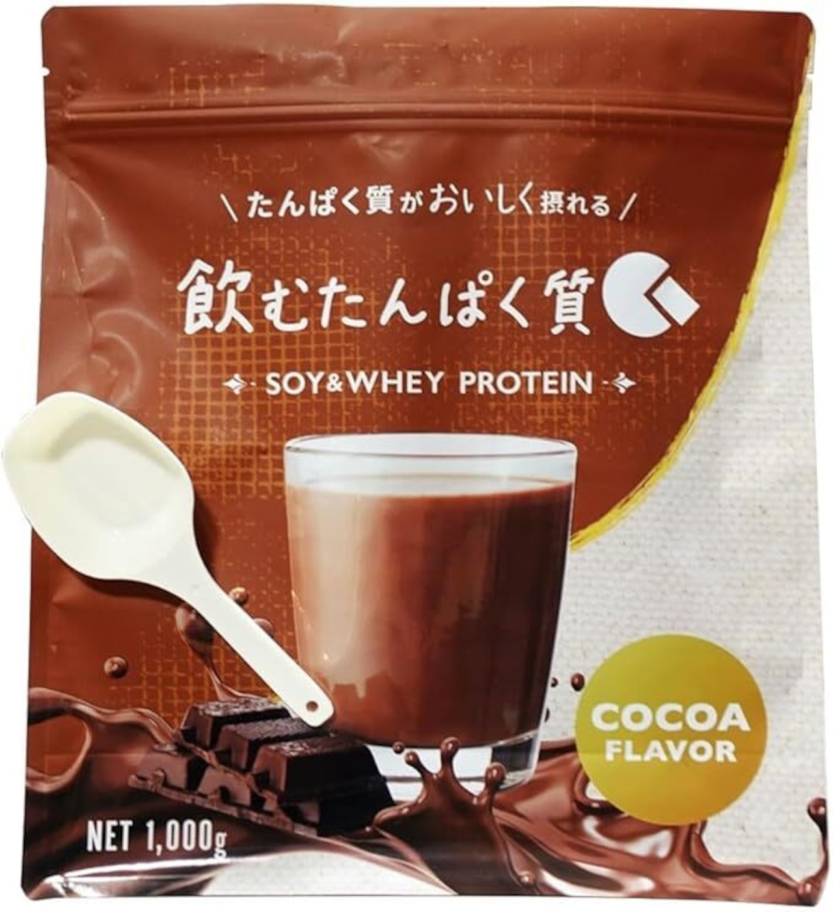

このページで学べること
1
痩せない本当の原因がわかる
2
内臓脂肪と肝臓の関係がわかる
3
脂肪肝を改善する10の食べ物がわかる
4
何から食べればいいか優先順位がわかる
5
今日からできる食事改善法がわかる
第1章｜あなたが痩せない"たった一つ"の根本原因
結論
あなたが痩せない原因は、増えすぎた内臓脂肪のせいで肝臓が正常に働いていないこと。
内臓脂肪
普通預金タイプ
つきやすいが落ちやすい。本来はダイエット開始で真っ先に燃える「ボーナス脂肪」
皮下脂肪
定期預金タイプ
一度ついたら頑固。長期的にエネルギーを蓄える役割で落ちにくい
脂肪肝チェック｜健康診断の数値で確認
血液検査の以下の項目をチェック。理想値を超えていたら、機能低下が始まっているサインです。
ALT（GPT）
5〜16 U/L
AST（GOT）
5〜16 U/L
γ-GTP（男性）
10〜50 U/L
γ-GTP（女性）
10〜30 U/L
※「正常範囲内」と言われても、上記を超えていたら機能低下のサイン
朗報
やるべきことは、たった1つ。
「内臓脂肪を落として、肝臓の働きを正常に戻す」こと。
この順番さえ間違えなければ、必ず体は変わり始めます。
「内臓脂肪を落として、肝臓の働きを正常に戻す」こと。
この順番さえ間違えなければ、必ず体は変わり始めます。
第2章｜脂肪肝をごっそり落とす食べ物10選
🌱
No.01
チアシード
効果
毎日25gを8週間摂取で、脂肪肝患者の52%で内臓脂肪9%減。豊富なオメガ3脂肪酸が脂肪燃焼スイッチを入れる。
食べ方
1日大さじ1杯（約15g）。ヨーグルト・スープ・味噌汁に混ぜるだけ。固い殻で守られているので酸化しにくい。
🧄
No.02
にんにく
効果
アリシンの抗酸化作用で肝臓のサビつきを抑制。摂取で脂肪肝改善確率が2.75倍に上昇したメタ分析あり。
食べ方
①刻むかすりおろす ②10分放置して空気に触れさせる ③その後に調理。これだけでアリシン量が最大化。チューブにんにくは加熱処理されているのでアリシン量が少ない。
🐟
No.03
青魚（サバ・イワシ・サンマ・鮭）
効果
オメガ3脂肪酸サプリで肝臓の脂肪が平均5.2%減少。鮭の赤色素アスタキサンチンはビタミンEの約1000倍の抗酸化力。
食べ方
毎日1食、手のひらサイズの焼き魚かお刺身を取り入れる。サバ缶・イワシ缶でもOK（骨ごとカルシウムも摂れる）。
🌶️
No.04
クルクミン（ターメリック）
効果
強力な抗酸化・抗炎症作用で肝臓の慢性炎症をブロック。905名対象のメタ分析で肝機能が明らかに改善と結論。
食べ方
カレーで摂るのが一番簡単。ブラックペッパーと一緒に摂ると吸収率が20倍以上に。鶏胸肉や野菜の炒め物にカレー粉＋黒胡椒も◎。
🫘
No.05
大豆製品（納豆・味噌・豆腐・豆乳）
効果
大豆イソフラボン（植物性エストロゲン）が40代以降の代謝低下を補う。脂肪肝の進行や血糖値異常を改善する研究結果あり。
食べ方
毎日の食事に味噌汁と納豆を追加。間食に調整豆乳や冷奴一品でもOK。
💊
No.06
L-カルニチン
効果
脂肪を「焼却炉（ミトコンドリア）」へ運ぶ運び屋アミノ酸。肝疾患のある人ほど補給効果が高いとメタ分析で確認。
食べ方
赤身の肉・羊肉に多く含まれる。効率的に摂るならサプリメントもおすすめ。
🥣
No.07
発酵食品（納豆・味噌・キムチ・ヨーグルト）
効果
腸と肝臓は運命共同体（腸肝相関）。腸内環境が悪化するとリーキーガットで毒素が肝臓を攻撃。プロバイオティクスは脂肪肝改善に有効。
食べ方
納豆・味噌・キムチ・ヨーグルト・大豆ヨーグルトなど複数の発酵食品をバランスよく。腸活レシピ集（特典13）も合わせて活用。
🍄
No.08
きのこ類（しめじ・舞茸・エリンギ・しいたけ）
効果
オルニチンが肝臓のデトックス機能（尿素回路）をスムーズに。低カロリー・高食物繊維で、舞茸はビタミンDも豊富。
食べ方
炒め物・スープに入れるだけで天然の出汁が出る。減塩にもつながる安くて美味しくて痩せる三拍子。
🍊
No.09
みかん
効果
みかんに豊富なフラボノイドが効果。脂肪性肝の62人でみかん400g/日を4週間摂取すると、体重変化と無関係に脂肪肝が有意に減少。
食べ方
1日約4個（140kcal）が目安。ジュースではなく必ず生のまま食べる。優秀な低カロリー炭水化物源として活用。
💪
No.10
ホエイプロテイン
効果
ホエイプロテイン60g/日を4週間摂取で、ALT 41.0%減・AST 23.2%減と脂肪肝のリスク数値を有意に改善。
食べ方
たんぱく質が足りていない人や、忙しい時の即補給に最適。水でも牛乳でも美味しく飲めるのりfitnessオリジナル「飲むたんぱく質」がおすすめ。

この特典を見た人限定
商品ページを見る →
特典ライブラリへ戻るのりfitnessオリジナル「飲むたんぱく質」
水でも美味しい・ダイエット最適化された
のりfitnessが工場と相談して開発したホエイプロテイン
のりfitnessが工場と相談して開発したホエイプロテイン
10%OFF クーポンコード
QPHREV64
2個以上の購入で送料無料